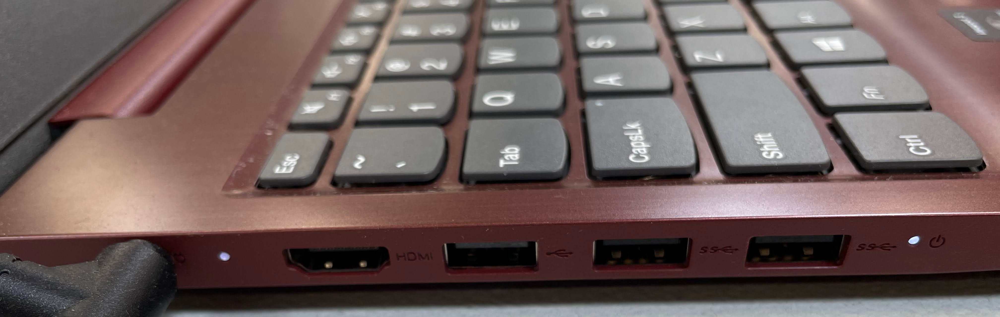

1

Best Overall
Check Price on Amazon →
Samsonite Tectonic Lifestyle Crossfire Business Backpack
~$75
Up to 17"
USB Port
Water-Resistant
Padded Straps
Multiple Compartments
Pros
- Samsonite build quality at mid-range price
- Dedicated charger compartment with good structure
- Handles large 17 inch laptops comfortably
Cons
- Heavier than budget options
- Less stylish than minimalist bags